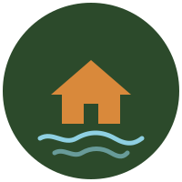
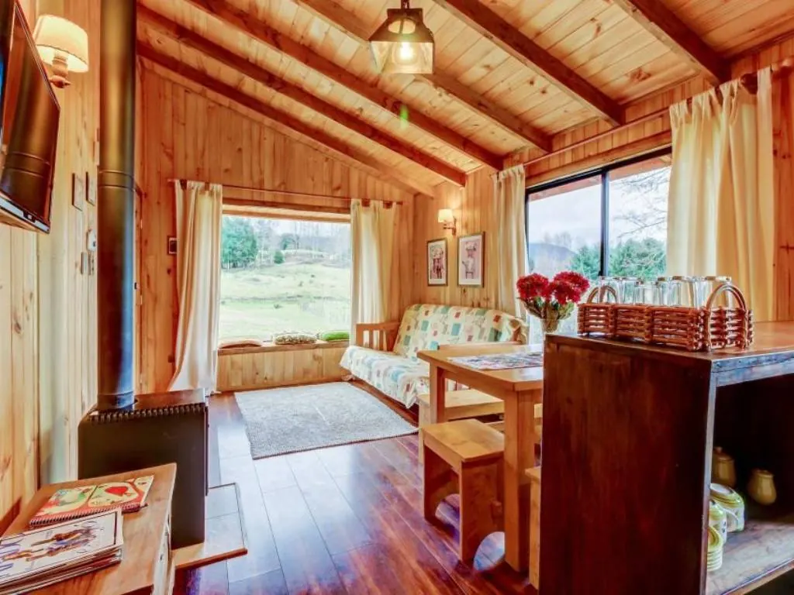
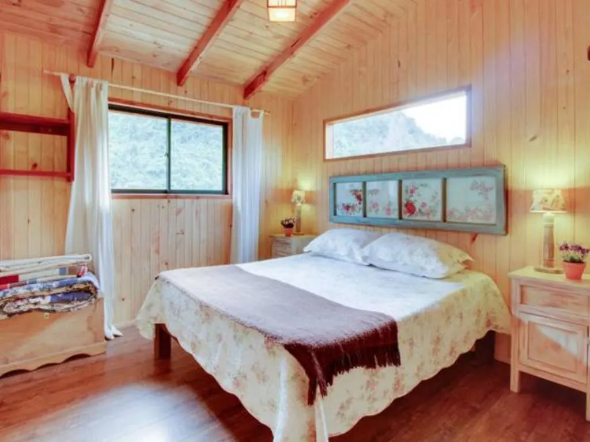
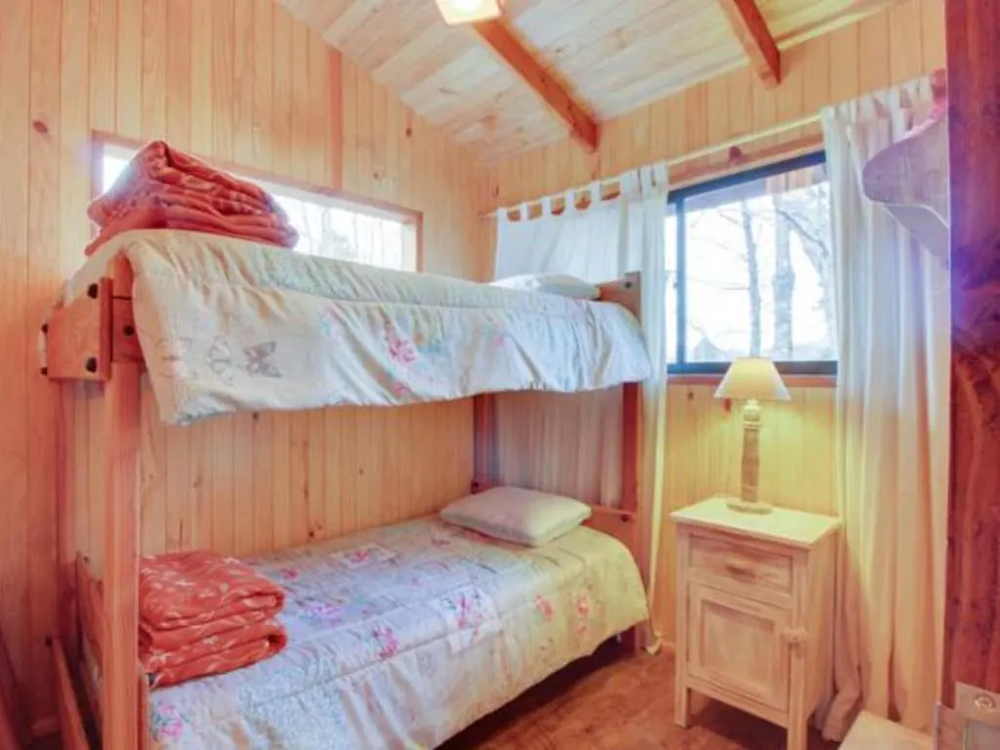
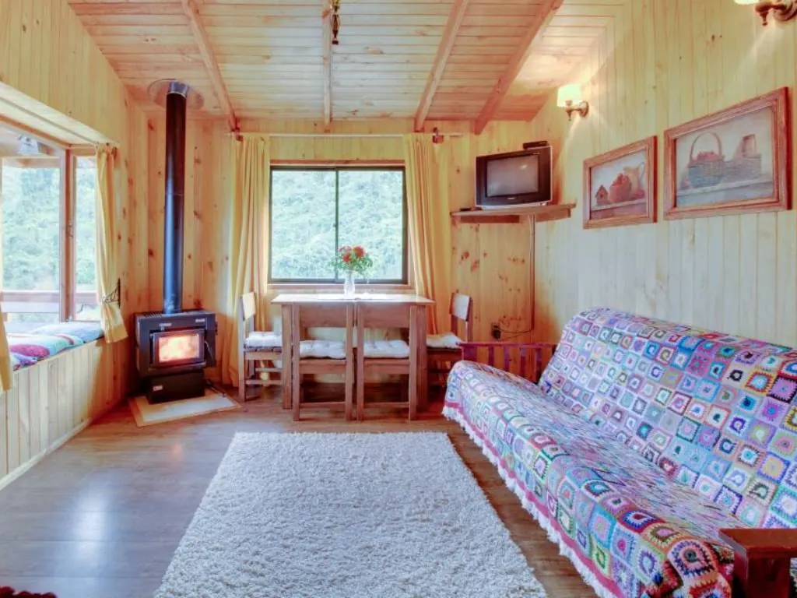
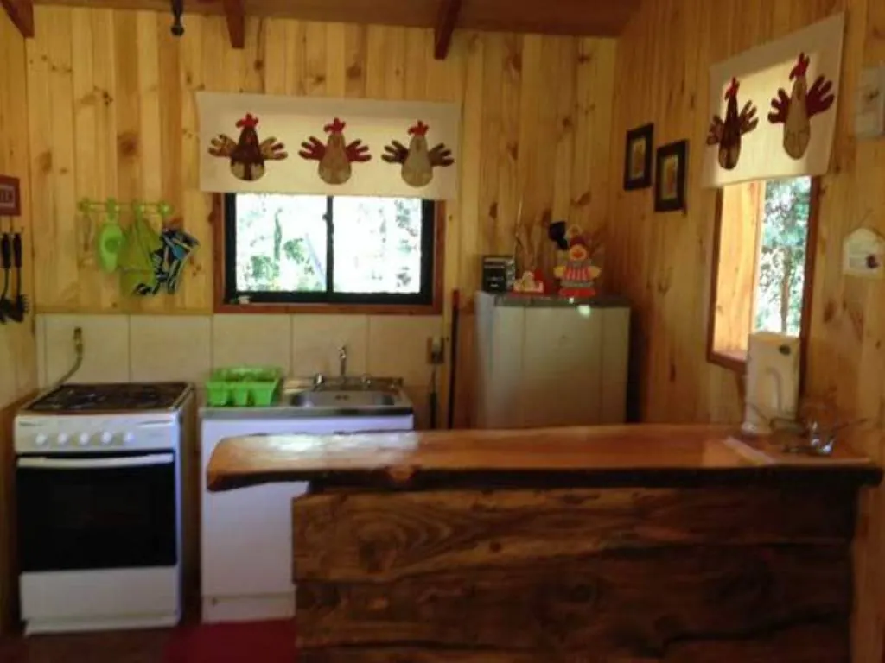
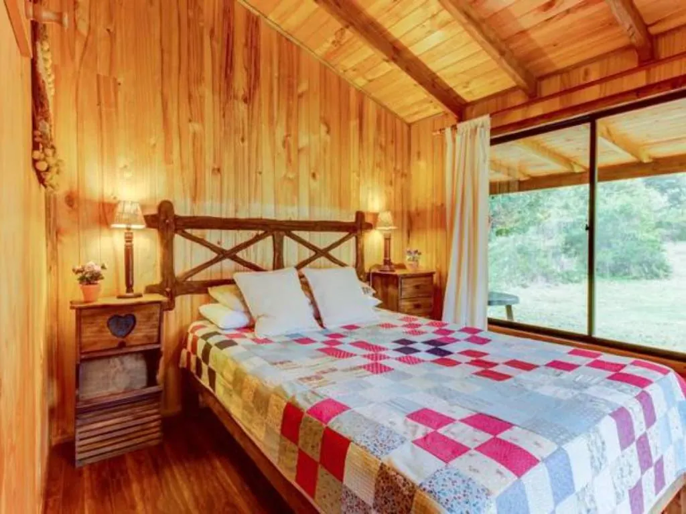
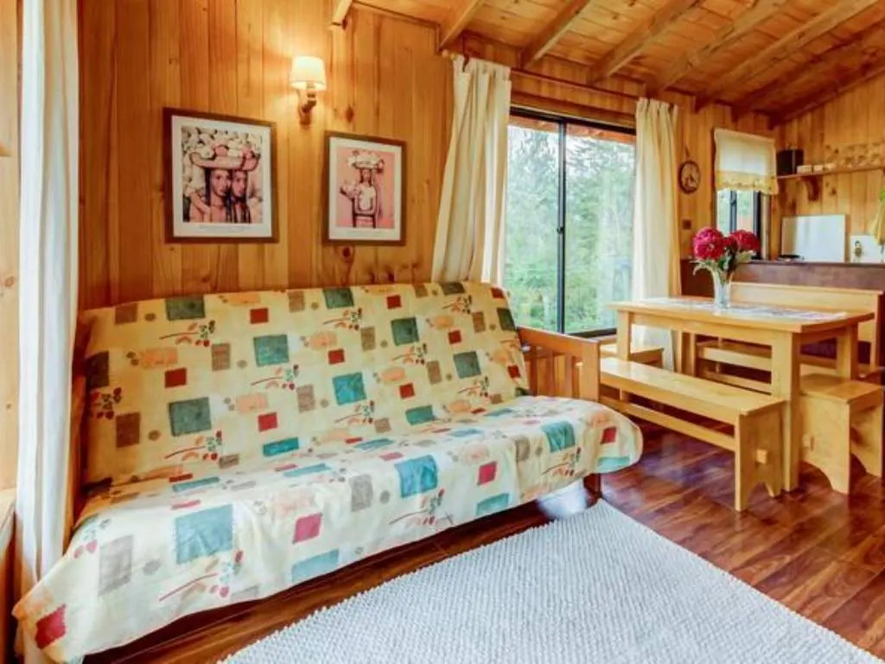
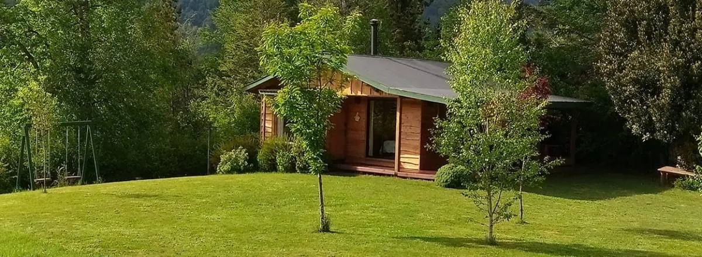

Murmullo de ArroyosCabañas · PucónCabañas de troncos con estufa a leña, lejos del centro y con vista a la cordillera. Camino a las termas de Huife.
El lugar
En el kilómetro 1 del camino Huepil – Paillaco: un rincón tranquilo y seguro, con cabañas separadas entre sí para que cada familia tenga su espacio.
Las cabañas
Amplias, con living, cocina totalmente equipada, dormitorio matrimonial e individual con baño privado. Ropa de cama y WiFi incluidos.








El jardín
Amplio jardín alrededor de las cabañas para jugar, hacer un asado o simplemente tirarse al pasto.
Reserve directo con nosotros: mejor tarifa, sin comisiones y respuesta personal por WhatsApp.
Escribir por WhatsAppBoceto preparado con las fotos públicas de Murmullo de Arroyos. En el sitio final van sus fotos, textos y tarifas actualizadas.
Propuesta de Red Vaeru para Murmullo de Arroyos
Garantía de portada: primero ven su portada terminada. Si no les convence, no pagan nada. Si les gusta, firmamos contrato y pagan el 50% para comenzar.
Hablar con Jorge por WhatsApp Ver el portafolio de Red Vaeru ↗